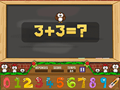
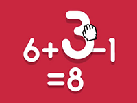
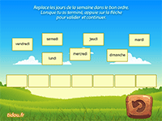
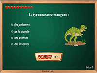
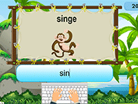
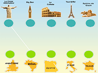
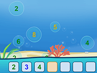
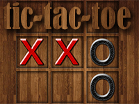

here are some games for fun to your child
Additions and subtractions, online game
Use the numbers to the right of the game to reconstruct the operations.
The numbers at the bottom are the results of the vertical operations. Those on the right are the results of horizontal operations.
How to play: Drag numbers to empty squares to reconstruct operations

Calculations to solve, online educational game
Find the operation (addition, subtraction, multiplication or division) that will give the proposed result using numbers and mathematical symbols.
How to play: Drag the different items to the question mark to form the operation that corresponds to the answer.

Days of the week, months, seasons
Free online game that lets you learn the names of the months.
Instructions :
Move the names of the days of the week, months of the year, or the seasons to position them in the correct order.

Online Multiple Choice Questionnaire
Test your knowledge in this online quiz game.
How to play: check the correct answer among the 3 or 4 proposals then press the "validate" button.

Animal Names, Online Educational Game
Animal Names is an educational game in which the child will have to enter the name of each animal that appears on the screen.
How to play: use the keyboard in lowercase letters

Famous monuments in the world
Online educational game.
Instructions: Connect each monument to the corresponding country.

Sequences to be completed
Complete the series of numbers.
How to play: Choose the level, easy, medium or difficult then press the bubble that corresponds to the next number.

Tic-tac-toe, online game
Tic-tac-toe is a classic strategy game that plays with two or against the computer. You will be able to choose a grid of 3x3, 5x5 or 7x7.
Three aligned pawns allow you to win on 3x3 grids while you need 4 on 5x5 and 7x7 grids
